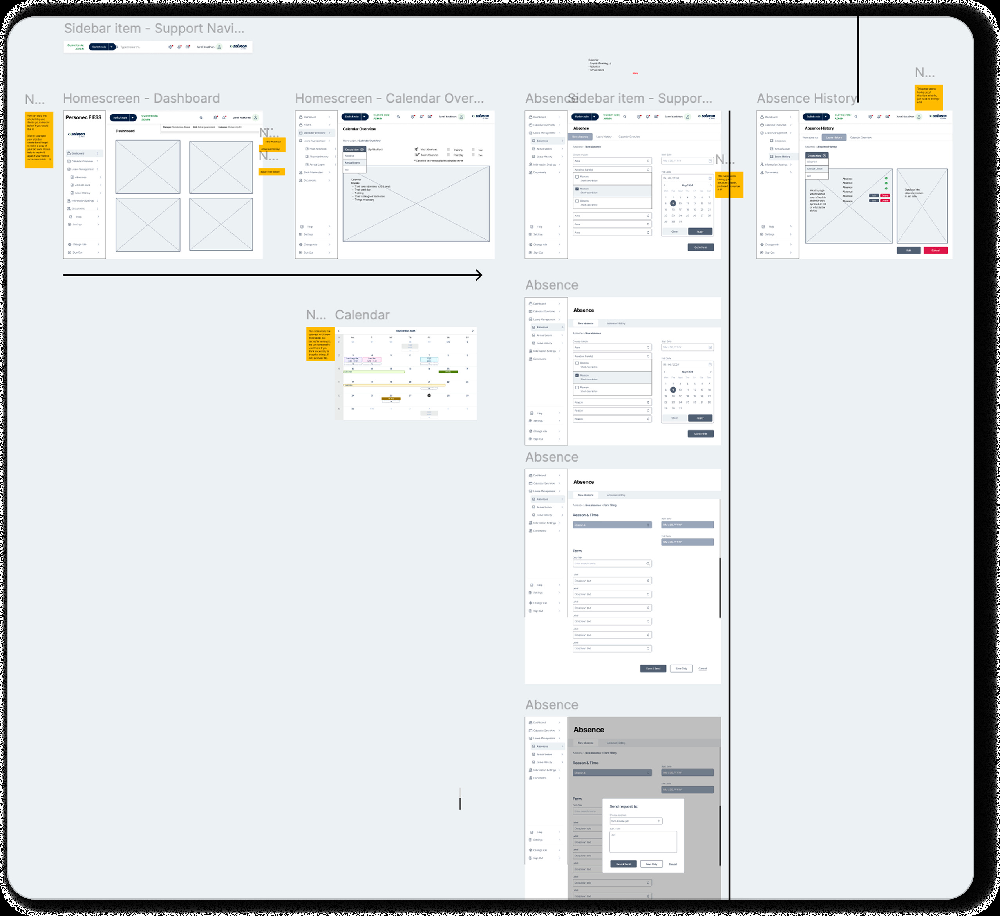

Product Design
Personec F ESS
Redesigned the employee self-service experience for 260 public sector organizations managing 450,000+ employment contracts — improving usability, accessibility, and mobile support for daily HR-related tasks affecting hundreds of thousands of employees.
Overview
An employee platform serving public sector at scale
Personec F ESS is an employee self-service solution within the Personec F product family. It enables employees and supervisors to manage personal information, absences, vacations, and events in one place. Information is transferred directly to payroll systems, reducing administrative work and minimizing errors across the entire organization.
For more product information: Personec F ESS →
260 Organizations
Serving public sector across Europe with comprehensive HR management capabilities.
450,000+ Employment Contracts
Managing complex employment relationships and compliance requirements at scale.
630,000 Vacation Periods
Handling annual vacation scheduling and absence management across all organizations.
Role & Responsibilities
UX Designer on a collaborative team
I collaborated closely with a multidisciplinary team across UX, product, engineering, and research to understand user needs and deliver a redesigned experience.
Collaborated With
- UX Designer & Researcher
- Product Manager
- Product Owner
- Developers
- QA Tester
- Design System Team
My Responsibilities
- UX strategy & planning
- Information architecture
- User flows & workflows
- Wireframing
- Prototyping
- Usability testing
- Responsive & mobile design
- High-fidelity design
The Challenge
Legacy system with significant usability gaps
Research and customer feedback revealed several critical usability issues in the legacy system that were increasing effort for employees and supervisors performing everyday HR-related tasks.
Confusing navigation
Users struggled to find key actions and features. Information architecture was unclear and inefficient.
Inefficient workflows
Absence and vacation request processes required too many steps and offered unclear guidance.
Poor information hierarchy
Critical information was buried or visually unclear, making it difficult to understand status at a glance.
No mobile support
The system was desktop-only, limiting accessibility for employees on the go.
Accessibility gaps
The design didn't meet evolving European accessibility requirements and WCAG standards.
Increased user effort
Employees and supervisors spent more time than necessary managing HR tasks, creating frustration.
Redesign Scope
Six critical areas improved
We prioritized the most-used features and workflows, focusing on clarity, efficiency, and mobile-first design.
1. Home Screen
Redesigned to improve visibility of key actions, prioritize important information, and create a clearer hierarchy for daily tasks.

2. Absence & Vacation Overview
Simplified information organization and improved discoverability of actions related to absences and vacations.

3. Create Absence Report
Improved guidance and structure to help users complete absence reporting with greater confidence.

4. Create Vacation Request
Reduced complexity in the vacation request flow and improved clarity throughout the process.
5. Create Event
Simplified event creation and aligned interactions with other workflows for consistency.

6. Save Vacations & Convert Holidays
Redesigned complex workflows to make decision-making easier and reduce user confusion.

Design Process
From discovery to validation
Discovery
To understand existing challenges, we analyzed:
- Customer satisfaction reports and feedback patterns
- pNPS feedback from active users
- User feedback from 1,448 employees across organizations
- Existing workflows and interface patterns

UX Audit
We conducted a comprehensive audit covering:
- User flow mapping and journey documentation
- UI inventory audit to catalog existing components and patterns
- Pain point analysis and prioritization
- Accessibility review against WCAG standards
Alignment & Prioritization
We worked closely with stakeholders to:
- Define scope and prioritize high-impact improvements
- Align business goals and user needs
- Coordinate implementation timelines
- Plan dependencies with the Design System team
Information Architecture
We reorganized navigation and content structure to improve discoverability and create a more intuitive experience for users.
Wireframing
Created quick sketches and wireframes to validate layout concepts and workflow improvements with the project team before moving to high-fidelity design.


Low-Fidelity Validation
Built low-fidelity prototypes focusing on:
- Home Screen redesign
- Create Vacation workflow
- Create Absence workflow

Collaborated with UX Research to conduct Maze testing with 30 customers and identify early usability issues before committing to high-fidelity design.
Iteration & High-Fidelity Design with accessibility
Refined concepts based on testing insights and designed complete end-to-end experiences using the Design System. Worked closely with the Design System team to validate components, responsive behavior, and implementation feasibility. Accessibility annotations were included.

Validation & Beta Launch
Before full launch, the redesign was validated through Maze testing with 469 users, identifying any remaining issues. The beta launch collected feedback from:
- 148 users through quantitative surveys measuring ease of use and confidence
- 120 open-ended responses providing qualitative insights and improvement suggestions
Impact
Post-Launch Results
The redesign improved the experience of everyday HR tasks for employees and supervisors across hundreds of public sector organizations.
easy to use
confusing
errors or issues
standards met
Reduced user effort
Simplified workflows and clearer information hierarchy reduced time and effort for daily HR tasks.
Mobile accessibility
Full mobile support enabled employees to manage HR tasks on the go, improving flexibility and inclusion.
Accessibility foundation
Accessibility improvements were built into the foundation of the redesigned experience from day one, benefiting all users.
Key Learnings
Lessons from redesigning at scale
1
Balancing accessibility with complexity
Complex business rules and accessibility requirements can coexist when design thinking is applied early and consistently throughout the process.
2
Responsive design from the start
Designing for desktop and mobile simultaneously, rather than as an afterthought, results in better experiences across all contexts.
3
Design system alignment
Coordinating product delivery with Design System maturity and roadmap dependencies requires early planning and close collaboration with system teams.
4
Validation at scale reduces risk
Large-scale user testing (Maze with 30 users for low-fi, 469 for hi-fi) provides confidence and reduces risk before full organization-wide launch.